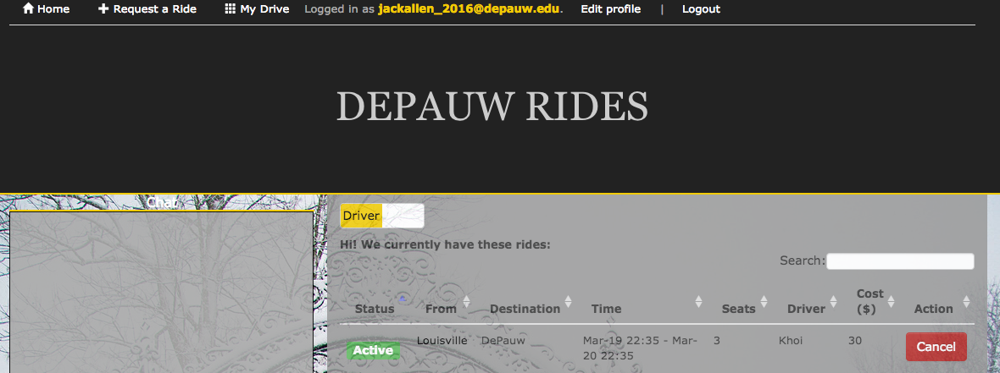
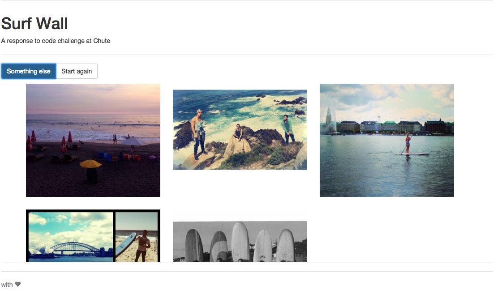

Porfolio
A thousand miles journey starts with a single step!
Ride sharing application
For graduating senior project at DePauw, I develop an application that allows people to share itineraries and ride together. Users can also search and sort rides. Ride requests that match the existing rides will be merged. Real-time chatroom is also supported in case of urgent requests. Payment is in beta.

DemoInstagram-style walls with Chute Api
GetChute.com is an amazing tech solution that allows brand managers to have a grasp on the exponetially growing social media data. Using Chute's api and Angularjs, I build a simple app that let you scroll images indefinitely!

DemoChance - An Electronic Version
In our Intermediate digital arts class offered in Spring 2013 at DePauw, Chaz Evans asked each of us to come up with 3 proposals for our final project. That is, a project that comprises of all the knowledge we have learnt, including gif, movie making, media critics, etc.

One of my proposals was to download all the ID's profile pictures of DePauw's faculty and students and create something similar to the origin of The Facebook. As you may have thought, the idea was met with grave criticisms from my other classmates, some of whom are very active feminists.
And that's the beginning of how I turned the idea into a tribute to DePauw's people. I owe the original concept Christian Boltanski's Chance at Biennale Venice 2011.
Please find more about my artist's statement and the process here.
Demo